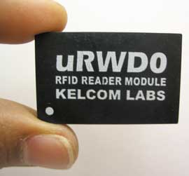

Эксперты прогнозируют, что в самое ближайшее время начнется массовое коммерческое использование систем радиочастотной идентификации - RFID (Radio Frequency IDentification) на предприятиях оборонной и автомобильной промышленности, в торговле и логистике. Ожидается, что метки радиочастотной идентификации станут обязательным атрибутом самых разнообразных изделий. Необходимость сбора, обработки и представления данных для систем радиочастотной идентификации инициирует создание новой и довольно масштабной отрасли. Параллельно должен сформироваться рынок считывателей меток и другого вспомогательного оборудования. Уже в ближайшем будущем RFID-чипы различной степени сложности найдут применение в здравоохранении (мониторинг состояния пациентов), строительстве (управление проектами и оборудованием), на транспорте (отслеживание местонахождения багажа и пассажиров в аэропортах) и других областях.
Как известно, практически любая технология в своем жизненном цикле проходит три периода. Сначала бывает просто много шума и предсказаний по поводу того, к чему эта технология приведет; затем начинается ее активное внедрение. На этом этапе о технологии говорят еще больше, однако отзывы часто бывают достаточно критическими, в ней видят угрозу сложившемуся порядку вещей. И, наконец, в зависимости от результатов второго этапа начинается третий - повсеместное применение технологии. Изобретенная довольно давно технология RFID сегодня вступает в самую интересную фазу - вторую. Информация о проектах, использующих технологию радиометок, приходит нынче отовсюду. Идею отличает простота, почти граничащая с гениальностью: для идентификации товара (и не только товара) предлагается применять микроскопические чипы со встроенным радиопередатчиком. Они запитываются от энергии принятого сигнала, что позволяет обходиться без громоздких батарей. Для считывания информации с чипа достаточно поднести к нему на определенное расстояние (от нескольких сантиметров до нескольких метров) активный сканер.
В перспективе ожидается, что правительства по всему миру начнут заменять бумажные идентификационные документы цифровыми. Новые средства станут использоваться в паспортах, удостоверениях личности, банковских и кредитных картах и будут включать расширенный набор биометрических данных. Это должно сократить кражи информации, но первоочередной и реальной пользой от них станет, скорее всего, ускорение идентификации в пассажиропотоках. В наше время, когда многие компании называют свои технологии революционными, непросто определить, какая из этих новейших технологий реально повлияет на нашу жизнь. Однако можно угадать перспективы технологий, вокруг которых собираются концерны и ассоциации таких игроков рынка высоких технологий, как Intel, IBM, Philips, Texas Instruments (и более ста других компаний). Впрочем, технология радиочастотной идентификации сегодня развивается не только крупными, но и небольшими научными центрами высокотехнологичных компаний.
Еще в прошлом году компания IDC обнародовала прогноз, согласно которому к 2012 г. распространение коммуникационных устройств, включая радиометки RFID, приведет к гигантскому росту объема информации, циркулирующей в сетях. Причем большая часть этой информации будет передаваться с периферии сетей на серверы - т. е. в направлении, противоположном сегодняшнему. Появятся и специализированные беспроводные "ячеистые" сети (mesh networks), которые позволят органам власти в крупных городах контролировать состояние оборудования и различных объектов на значительной площади. Все эти изменения вызовут потребность в такой аппаратуре, как системы хранения данных, управления контентом и безопасности. По данным исследовательских компаний, уже в прошлом году производители RFID-меток получили доходы около 300 млн долл. При этом на сегодняшний день объем рынка RFID оценивается в 700 млн долл., а к 2007 г. общий объем продаж и услуг на нем должен достичь 2 млрд долл.
История RFID
Некоторые еще и сегодня полагают, что первый образец RFID-устройства был создан русскими в 1945 г. - разумеется, для разведывательных целей. К сожалению, это не так. Просто именно в это время было создано пассивное подслушивающее устройство, которое к проблемам радиочастотной идентификации отношения, в общем-то, никакого не имело.
Тем не менее первенство в разработке RFID-технологии оспаривают сегодня многие. Считается, что ключевую роль в нынешнем массовом увлечении RFID сыграл исследовательский центр Auto-ID, организованный при Массачусетском технологическом институте (MIT) в октябре 1999 г. Этому событию предшествовал год напряженных поисков, последовавших за созданием системного подхода к автоматической идентификации объектов.
По другим данным, идея пассивных электронных запоминающих устройств-меток стала одной из причин образования в 1969 г. компании под названием Communications Services Corporation, или ComServ. В 1973 г. она получила патент на "небольшое портативное устройство, которое легко спрятать, а в случае необходимости прикрепить или вмонтировать в различные объекты". В качестве памяти инженеры использовали ферритовые кольца, позволившие им создать нечто не слишком портативное по нынешним меркам, но способное запомнить до 16 бит данных. Изобретение демонстрировалось в различных транспортных и правительственных организациях. Было даже выдвинуто предложение использовать систему для организации противоугонной службы для автотранспорта. Все тщетно - даже сегодня многие сомневаются в экономической эффективности радиометок, а в семидесятых никто не хотел даже прислушаться к этой идее.
В другом документе утверждается, что первыми предпосылками к созданию радиометок стала работа Харри Стокмана Communication by Means of Reflected Power, опубликованная в 1948 г. и описывающая коммуникационное устройство, функционирующее только под воздействием внешнего радиоизлучения. Конечно, в истории нашлось место и для первых известных примеров применения методики: система опознавания "свой-чужой" в авиации и однобитные противоугонные устройства EAS (Electronic Article Surveillance).
В 80-х годах из состава Лос-Аламосской лаборатории, участвовавшей в разработке концепции, выделились компании Identronix и Amtech. А с 1987 г. начали появляться сведения о коммерческих реализациях RFID. Первая в мире инсталляция подобной системы была осуществлена в Норвегии на железной дороге, затем последовал аналогичный проект в США.
В 90-е годы XX века началось активное применение радиосистем для оплаты дорожных сборов на скоростных магистралях. Автомобили получили возможность пересекать въездные терминалы, не снижая скорости. Бесконтактные средства оплаты появились в США на дорогах Оклахомы, Канзаса и Джорджии, а также в районе Хьюстона. Все они базировались на единой спецификации, названной Title 21. Несколько северо-восточных регионов США сформировали группу E-Z Pass Interagency Group, занявшуюся вопросами стандартизации RFID-методик для автоматизации взимания платы за проезд. Корпорация Texas Instruments (http://www.ti.com) создает TIRIS - Texas Instruments Registration Identification System (затея с TIRIS привела ныне к образованию подразделения компании TI RFID). И, наконец, наступает решающий, переломный момент, когда инженеры впервые смогли интегрировать приемопередатчик радиоволн в микросхему, изготовленную по стандартному КМОП-процессу. Это позволило объединить на одной подложке все компоненты, необходимые для функционирования радиометки, и открыло новые возможности для ее дальнейшей миниатюризации.
Как бы там ни было, но, по официальной версии, начало современной истории RFID было положено учеными из MIT, которые занялись разработкой стандартов и технологий, необходимых для широкого применения технологии на практике. Они впервые задались вопросом снижения стоимости микросхем. Вскоре к ним присоединился Кевин Эштон из лондонского подразделения Procter & Gamble, где он трудился в качестве помощника брэнд-менеджера. Именно ему удалось вызвать интерес к радиометкам у крупных корпоративных спонсоров. Группа обратилась за поддержкой в Uniform Code Council, глобальную организацию, занимающуюся системами маркировки товаров, и получила ее. В 2000 г. филиал центра появился в Кембриджском университете; центры поддержки радиометок открываются при университетах Китая, Японии, Швейцарии, Австралии.
Примерно год назад все наработки из Auto-ID были переданы в организацию EPCglobal (http://www.epcglobalinc.org), детище EAN International и Uniform Code Council. EPC расшифровывается как Electronic Product Codes, что достаточно ясно указывает на характер работы организации. Штрих-код во всех его ипостасях предполагается заменить на соответствующие электронные эквиваленты в мире радиометок. В частности, к задачам EPCglobal относится разработка стандартов передачи данных из RFID-считывателей в различные приложения, а также стандартов их обмена между приложениями, управляющими цепочками поставок. Это должно упростить электронные транзакции, происходящие между ERP-системами двух компаний, ведущих товарообмен. Стандарты будут определять, как связующее ПО должно обрабатывать полученные RFID-считывателем данные при поступлении товаров на склад и передавать эти данные в корпоративное приложение.
Бесконтактная идентификация объектов
Как известно, главное в работе системы автоматизации заключается в том, чтобы информация была абсолютно достоверна. Ведь даже на поиск и отсеивание неверно введенной информации в больших массивах данных придется затратить немало времени и средств, не говоря уже о прямых убытках, к которым может привести неадекватное решение, принятое на ее основе. Технологии бесконтактной идентификации наиболее полно соответствуют всем требованиям компьютерной системы управления, где требуется распознавание и регистрация объектов и прав в реальном масштабе времени. Под бесконтактной идентификацией обычно подразумевают возможность надежно распознавать объекты по индивидуальным естественным или искусственно присвоенным им признакам без непосредственного контакта с ними.
Сама по себе идея автоматизированного распознавания объектов не нова. Известны как минимум пять разновидностей идентификации:
- оптическая: системы, основанные на штрих-кодах, распознавании символов;
- магнитная: магнитная полоса, распознавание меток, нанесенных магнитными носителями;
- радиочастотная идентификация (RFID) и передача данных: пластиковые смарт-карты со встроенной микросхемой, радиометки (теги);
- биометрическая: распознавание отпечатков пальцев, сканирование рисунка радужной оболочки глаза;
- акустическая: идентификация по звуковым параметрам (голосу).
Для радиочастотного распознавания служат закрепленные за объектом специальные метки, несущие идентификационную и другую информацию. По сравнению с перечисленными выше методами RFID-технологии имеют существенные преимущества:
- для RFID не нужен механический или оптический контакт;
- RFID-метки читаются быстро и точно, обеспечивая практически 100%-ную идентификацию;
- RFID-метки могут использоваться даже в агрессивных и высокотемпературных средах, читаться через грязь, краску, пар, воду, пластмассу, древесину (последние разработки позволяют использовать их даже на поверхности и в толще металла);
- у пассивных RFID-меток, не имеющих источника питания, фактически не ограничен срок эксплуатации;
- RFID-метки несут большое количество информации и могут активно взаимодействовать с внешними системами, поскольку многие из них допускают не только чтение, но и запись информации;
- за счет возможности использования различных систем шифрации RFID-метки практически невозможно подделать;
- варианты геометрии и дизайна метки легко адаптируются к характеристикам носителя и требованиям системы контроля;
- существует возможность использования RFID-идентификации для объектов, находящихся на больших расстояниях от считывателя (десятки метров) и движущихся со скоростями до 300 км/час.
RFID-системы применяются в самых разных случаях, когда требуется оперативный и точный контроль, отслеживание и учет многочисленных перемещений различных объектов. Перечислим только наиболее типичные применения. Одно из них - электронный контроль за доступом и перемещениями персонала на территории предприятий. Далее, это управление производством, товарными и таможенными складами (в особенности крупными), магазинами, выдачей и перемещением товаров и материальных ценностей. На транспорте RFID-системы могут обеспечить контроль, планирование и управление движением, интенсивностью графика и выбор оптимальных маршрутов; на общественном транспорте они служат для управления движением, оплаты проезда и оптимизации пассажиропотоков. На их базе можно создавать системы электронных платежей для всех видов транспорта, организующие автоматический сбор данных и при необходимости начисление оплаты на железных дорогах, платных автомобильных трассах, на грузовых станциях и терминалах, платных автостоянках. Кроме того, RFID-системы подходят для обеспечения безопасности (в комплексе с другими техническими средствами аудио- и видеоконтроля), включая защиту и сигнализацию на транспортных средствах.
Как это работает
Системы RFID обычно состоят из трех основных компонентов: считывателя, транспондера (обычно называемого меткой или тегом, от англ. tag) и компьютерной системы обработки данных.
Считыватель (рис. 1) имеет приемопередающее устройство и антенну, которые посылают сигнал к тегу и принимают ответный; микропроцессор, который проверяет и декодирует данные; а также память, которая сохраняет данные для последующей передачи, если это необходимо. Основные компоненты тега (рис. 2) - интегральная схема, управляющая связью со считывателем, и антенна. Чип содержит память, которая хранит идентификационный код или другие данные. Тег обнаруживает сигнал от считывателя и начинает передавать данные, сохраненные в его памяти, обратно в считыватель.
|  | Рис. 1. RFID-считыватель.
|
| Рис. 2. RFID-тег.
|
Нет никакой потребности в контакте или прямой видимости между считывателем и тегом, поскольку радиосигнал легко проникает через неметаллические материалы. Таким образом, теги даже могут быть скрыты внутри тех объектов, которые подлежат идентификации.
Теги бывают активными и пассивными. Активные теги работают от присоединенной или встроенной батареи, они требуют меньшей мощности считывателя и, как правило, имеют большую дальность чтения. Пассивная метка функционирует без источника питания, получая энергию из сигнала считывателя. Пассивные метки меньше и легче активных, менее дороги, имеют фактически неограниченный срок службы. Заметим также, что активные и пассивные теги бывают следующих типов: только для чтения, с чтением-записью и однократно записываемые, данные в которые могут быть занесены пользователем.
Физические принципы (по крайней мере, для большинства частотных диапазонов) напоминают работу трансформатора или системы связанных контуров. Как известно, если взять две катушки и разместить их не очень далеко друг от друга, то они будут оказывать друг на друга взаимное влияние. Считыватель содержит генератор высокой частоты, который запитывает его антенну. За счет наличия электромагнитной связи между антенной считывателя и антенной идентификатора в последней наводится переменное напряжение, величина которого зависит от конструктивного исполнения и расстояния между тегом и считывателем. Наведенное напряжение используется для питания микросхемы идентификатора. Именно она модулирует напряжение в антенне. За счет связи антенн модуляция появляется в антенне считывателя и поступает на его микросхему. По такому принципу работали первые пассивные R/O (Read Only - только для чтения) идентификаторы и считыватели. Затем были созданы идентификаторы, способные не только передавать информацию считывателю, но и получать ее для целей программирования (записи информации в энергонезависимую память). С точки зрения основных принципов построения RFID-системы в считывателе появился модулятор, который модулировал излучаемую считывателем несущую, а в идентификаторе - детектор и перепрограммируемая энергонезависимая память, в которую записывалась передаваемая считывателем информация. При такой технологии идентификаторы называются R/W (Read/Write - чтение и запись). Из принципа работы этой пары устройств однозначно следует вывод: чем больше требуемая дальность считывания, тем больших размеров будет считыватель и тем выше должна быть мощность его излучения.
RFID-теги сегодня, в зависимости от частотного диапазона работы, делятся на четыре категории:
- низкочастотные (125 и 134 кГц);
- высокочастотные (13,56 МГц);
- УКВ (800-900 МГц)
- "микроволновые" (2,45 ГГц).
Естественно, что в каждом из частотных диапазонов RFID-системам присущи вполне конкретные особенности, которые нагляднее всего иллюстрируются графиками, приведенными на рис. 3. Следовательно, для каждого из диапазонов используются свои методы кодирования сигналов в паре считыватель - идентификатор, свои скорости передачи и алгоритмы разрешения коллизий. Механизм антиколлизий используется для того, чтобы при одновременном нахождении в поле считывателя нескольких идентификаторов можно было выбрать для диалога только один, который необходим в данный момент времени. Для каждого из упомянутых частотных диапазонов действуют свои стандарты со своей степенью проработки (см. таблицу).
 |
Рис. 3. Зависимость параметров RFID от частоты.
|
Стандарты для частотных диапазонов
| Рабочая частота | Стандарт | Приложения |
| 125 КГц | ISO 14223 ISO 11784/11785 |
Разработаны для идентификации животных (домашнего скота), но достаточно широко используются в автомобильных иммобилайзерах |
| 13,56 МГц | ISO 14443 | Бесконтактные смарт-карты для широкого круга приложений |
| 13,56 МГц | ISO 15693 | Бесконтактные метки для приложений логистики, идентификации товаров и т. д. |
| 13,56 МГц | ISO 10373 | Методы тестирования |
| 2,45 ГГц | ISO 18000 | Бесконтактные метки для приложений логистики, идентификации товаров (с увеличенной дальностью) |
УКВ и "микроволновые" RFID-теги используются там, где требуются большое расстояние и высокая скорость чтения; это, например, контроль железнодорожных вагонов, автомобилей, системы сбора отходов. Например, считыватели устанавливают на воротах или шлагбаумах, а транспондер закрепляется на ветровом или боковом стекле автомобиля. За счет большой дальности действия возможна безопасная установка считывателей вне пределов досягаемости людей. Системы высокой частоты эффективны там, где требуется передавать большие объемы данных. Низкочастотные RFID-теги находят широкое применение там, где допустимо небольшое расстояние между объектом и считывателем. Обычное расстояние считывания составляет 0,5 м, а для тегов, встроенных в маленькие объекты, дальность чтения, как правило, еще меньше - около 0,1 м. Большая антенна считывателя может в какой-то мере компенсировать малую дальность действия небольшого тега, но излучение высоковольтных линий, моторов, компьютеров, ламп и т. п. мешает ее работе. Так, большинство систем управления доступом, управления складами и производством, бесконтактные карты используют низкую частоту.
RFID и корпоративные сети
Весной 2005 г. Cisco Systems (http://www.cisco.com) представила отчет компании IDC, в котором прогнозируется, что широкое внедрение технологии радиочастотной идентификации окажет значительное влияние на развитие корпоративных сетей. Успех внедрения данной технологии будет во многом зависеть от возможностей интеллектуальной и безопасной передачи RFID-информации вплоть до границ сети. Документ также указывает на то, что компаниям необходимо обеспечить готовность сетей к выполнению задач в масштабных RFID-проектах еще до начала их реализации.
В отчете IDC "Планирование внедрения: влияние технологии RFID на сети", подготовленном по поручению Cisco и основанном на опросах представителей ряда компаний, уже использующих технологию RFID в сфере розничных продаж и логистики, сообщается, что степень влияния данной технологии на работу корпоративных сетей зависит не только от количества используемых электронных ярлыков, но и от объема данных, которые способен хранить каждый ярлык, а также от количества циклов сканирования ярлыка за время перемещения продукта или выполнения операций с ним.
По мнению экспертов, расширение RFID-системы неизбежно, поскольку ее внедрение на протяжении всей логистической цепочки - основное условие реализации преимуществ этой системы. Организациям важно оценить влияние RFID на сетевую инфраструктуру еще до внедрения системы и обеспечить ее масштабируемость с самого начала. Изменение структуры сети в ходе эксплуатации станет сложной и дорогостоящей задачей.
Кроме того, как показывает анализ, сети масштаба предприятия с поддержкой RFID должны быть снабжены функциями интеллектуальной передачи и хранения данных на границах сети, а также интегрированными средствами управления и безопасности на всех уровнях сетевой инфраструктуры - от RFID до уровня бизнес-процессов. Компания Cisco, сотрудничающая с Европейским центром развития технологии RFID и содействующая продвижению стандартов RFID путем участия в отраслевом консорциуме EPCglobal, уже сейчас предлагает все эти функции, реализованные в инфраструктуре RFID Ready Network - высокоинтегрированной проводной/беспроводной сети, способной идентифицировать трафик электронных кодов продуктов (EPC) с тем, чтобы обеспечить его приоритетность на любом участке сети.
Как отмечают специалисты Cisco, масштабируемые, надежные, высокопроизводительные сети корпорации поддерживают специфику использования и перемещения информации в организациях. Организация доступа к этой информации для всего предприятия упрощает работу логистической цепочки, что важно для розничной торговли, государственных организаций и промышленных компаний. Благодаря сетям Cisco предприятия розничной торговли могут более оперативно реагировать на рыночные изменения, точнее отслеживать активы, повышать адаптивность и строить высокоэффективные, надежные, оперативные цепочки поставок, основанные на технологии RFID.
Инициативы IBM
Как результат объявленной прошлой осенью инициативы, предусматривавшей инвестирование 250 млн долл. в технологию RFID, нынешним летом корпорация IBM (http://www.ibm.com) представила новые услуги, ПО и технологии, направленные на ускорение внедрения методов радиочастотной идентификации. В частности, она объявила о намерении выйти на рынок принтеров RFID-меток, выпустив принтер с поддержкой RFID, сокращающий затраты заказчиков и повышающий эффективность текущей деятельности. Поскольку новый RFID-принтер способен печатать как традиционные штрих-коды, так и RFID-метки, с его помощью заказчикам, включая небольшие и средние компании, будет проще перейти от штриховых кодов к RFID-меткам.
Принтер, в дополнение к которому предлагаются услуги технического сопровождения и службы технической поддержки, способен передавать информацию о движении товаров в сети компании, обеспечивая ее внесение в базы данных товарных запасов, доставку и отслеживание заказов. Для ускорения обработки и повышения точности информации в цепочке поставок в принтере Infoprint 6700 R40 используется микропроцессор IBM POWER, отвечающий за надежную и точную передачу информации на каждую RFID-метку. Принтер также способен распознавать ненадежно работающие RFID-метки и помечать их как сбойные во избежание дорогостоящих ошибок доставки.
Вклад PrintronixСтоит отметить, что IBM продолжает использовать технологию корпорации Printronix (http://www.printronix.com). Как известно, последняя основной упор делает на продвижение оборудования, предназначенного для печати RFID-этикеток (рис. 4). В Printronix разработали целое семейство продуктов SmartLine RFID. В него вошли: многопротокольный принтер интеллектуальных этикеток SL5000e MP; инструментарий разработчика этикеток Smart Label Developers Kit; принтер T5000 SR, печатающий штрих-коды формата EPC, но модернизируемый для работы с RFID-этикетками, и соответствующий комплект модернизации для него ThermaLine T5000 Smart Ready Upgrade Kit. Благодаря тесному сотрудничеству Printronix с организацией EPCglobal в продуктах линейки достигнута совместимость оборудования EPC и RFID, причем принтер SL5000e MP стал первой платформой, полностью соответствующей требованиям EPC Class 0 и EPC Class 1. Использование SL5000e MP с оборудованием других производителей, поддерживающих протоколы Alien Class 1 или Matrics Class 0, также не вызывает никаких затруднений. Принтеры поддерживают не только стандарты EPC Class 0, 0+ и 1, но и могут печатать популярные в Европе UHF-метки стандарта Philips UCODE EPC 1.19 (подгруппа меток производства Philips семейства ICode с рабочими частотами 862-928 МГц и 2,45 ГГц).
|
IBM также объявила об открытии консалтинговой службы по защите частной информации при применении RFID-технологий, которая помогает компаниям обеспечить доверие своих клиентов, используя при этом RFID-системы с максимальной выгодой для бизнеса. Консультанты службы предоставляют информацию о местных и международных законах об охране частной информации, а также о принципах Организации экономического сотрудничества и развития (ОЭСР), лежащих в основе многих законов об охране частной информации. Консалтинг по вопросам охраны частной информации предусматривает оценку, проектирование и внедрение оптимизированных с точки зрения охраны частной информации RFID-решений, разработку политик, конструктивных подходов и методов обмена информацией, программы обучения и повышения осведомленности сотрудников. Эти услуги позволяют ответственным сотрудникам компаний лучше понять, какие данные собираются, как они будут обрабатываться и кто будет иметь к ним доступ. В ходе специального двухдневного консультационного семинара клиенты получают рекомендации касательно оптимальных методик, а также политик и процедур получения согласия на применение технологии в целях защиты частной информации потребителей, сотрудников и партнеров. Услуги консалтинга по охране частной информации могут быть расширены для более широкомасштабных внедрений.
Кроме того, корпорация IBM дополнила решение IBM RFID Solution for the Consumer Driven Supply Chain стартовыми комплектами, ориентированными на конкретные отрасли. Эти комплекты упрощают производителям и розничным продавцам потребительских товаров сверку заказов, создание отчетов о доставке, а также проверку комплектности грузов и состояния товарных запасов. Все это помогает розничным компаниям и их партнерам-производителям снижать затраты на товарные запасы и логистику, одновременно повышая качество обслуживания и объемы продаж.
Предназначенное для RFID-систем связующее ПО IBM WebSphere RFID построено в сервисно-ориентированной архитектуре, предоставляющей надежную, масштабируемую, основанную на стандартах платформу для развертывания RFID-решений. Предлагаемое IBM сочетание высококлассных услуг, связующего ПО и стартовых комплектов позволяет заказчикам ускорить развертывание RFID-решений.
Альянсы и решения
Еще в прошлом году Royal Philips Electronics и IBM заключили соглашение, в рамках которого планируют вести интенсивные разработки в области систем радиочастотной идентификации и технологий смарт-карт. Согласно заявлению компаний, они планируют уделять особое внимание решениям для таких сфер, как управление цепочками поставок и активами, розничная торговля, транспорт, а также для финансовых и правительственных организаций. Кроме того, по условиям достигнутых договоренностей, IBM Global Services разработает RFID-систему для производственных и дистрибьюторских подразделений Philips Semiconductor на Тайване и в Гонконге.
Нынешней весной корпорации Intel (http://www.intel.com) и SAP (http://www.sap.com) объявили о планах сотрудничества в сфере создания систем управления бизнес-процессами, использующих технологию RFID. Согласно достигнутым договоренностям, Intel предоставляет стандартизованную аппаратную архитектуру, позволяющую интегрировать устройства с поддержкой RFID с программными комплексами от SAP, такими, как система управления цепочками поставок mySAP Supply Chain Management и платформа SAP NetWeaver.
Как известно, SAP довольно успешно помогает своим клиентам внедрять RFID для получения максимальной экономической выгоды от этой быстро развивающейся технологии. SAP встраивает мощную RFID-функциональность в свои решения, входящие в комплекс mySAP Business Suite, и предлагает RFID-пакеты, отвечающие специфическим отраслевым требованиям. Одно из таких приложений, представленное в решении mySAP Product Lifecycle Management (mySAP PLM) и предназначенное для учета основных средств предприятия, обеспечивает компаниям возможность экономически эффективно и надежно функционировать круглосуточно семь дней в неделю. Это приложение эффективно управляет такими важными основными средствами, как машинное оборудование, электростанции и транспортные средства в течение всего их жизненного цикла. Чтобы расширить возможность доступа к данному решению специалистов по сервисному обслуживанию, работающих на объектах клиентов, SAP замыкает цикл бизнес-процессов от объекта клиента до системы back-end с помощью базирующегося на RFID-технологии мобильного решения SAP Mobile Asset Management и инфраструктуры SAP Auto-ID Infrustructure. Такой интегрированный подход помогает изменить методы управления основными средствами - перейти от стратегии реагирования на сбой, "ремонта после поломки", к прогнозирующей и предупредительной стратегии.
Значительное внимание технологии RFID уделяет в этом году корпорация Sun Microsystems (http://www.sun.com). Так, в январе она анонсировала систему идентификации на основе радиометок, предназначенную для использования в розничных торговых сетях и правительственных организациях, - Sun Java System RFID Tag and Ship ISA Solution. Речь идет о законченном решении начального уровня, ориентированном на те компании и учреждения, которые хотят оперативно внедрить у себя RFID-систему для задач идентификации и учета. Оно включает в себя рабочую станцию Sun W2100z с монитором, ПО Sun Java System RFID, принтер Printronix RFID, а также считыватели радиометок и штрих-кодов.
А уже в апреле Sun Microsystems представила новую версию своего ПО для корпоративных RFID-систем - Sun Java System RFID Software 2.0. Согласно заявлению представителей компании, анонсированное ПО отличается повышенной производительностью, улучшенной безопасностью, поддержкой стандартов RFID следующего поколения, а также расширенными возможностями администрирования. В частности, Sun Java System RFID Software 2.0 включает в себя браузерный интерфейс для централизованного мониторинга и управления RFID-устройствами в сети. ПО Sun Java System RFID Software оптимизировано для платформы Solaris (аппаратные архитектуры SPARC и x64, рис. 5), а также доступно для Linux.
| Рис. 5. Пример RFID-системы.
|
Интерес министерства обороны
В этом году компания Symbol Technologies (http://www.symbol.com) заключила пять соглашений на поставку мультипротокольных стационарных считывателей меток RFID для оборонного ведомства США, что позволит этому министерству внедрять и эксплуатировать технологию RFID Symbol на военных предприятиях во всем мире с целью наблюдения за материалами и компонентами по всей цепочке поставок министерства.
Теперь считыватели меток RFID Symbol дадут министерству обороны возможность отслеживать все - от танков до туалетной бумаги - и будут способствовать получению точной информации и ее обработке в режиме реального времени. Контракты заключены со стратегическими партнерами Symbol Technologies: CDO Technologies, Cheval Rouge, RSI ID Technologies, SYS-TEC Corp. и WFI Government Services и связаны с использованием стационарных мультипротокольных считывателей RFID от Symbol.
Мультипротокольный считыватель Symbol Technologies, предназначенный для промышленного использования, обеспечивает развитые средства ввода данных для считывания, записи, обработки и передачи информации от любых EPC-совместимых пассивных меток RFID с целью оперативной, автоматической и точной идентификации любого товара в пределах цепочки поставок. Мультипротокольный считыватель RFID входит в линейку решений корпоративной мобильности Symbol Technologies для ввода, передачи и контроля информации от точки сбора данных до точки принятия решения и обратно, обеспечивая возможность учета и экономию средств.
Стоит отметить, что Symbol Technologies - далеко не новичок на рынке RFID. В этом году она выпустила Symbol XR400 (рис. 6) - считыватель идентификационных радиометок корпоративного класса, способный проводить прикладную обработку данных на месте в режиме реального времени. Это устройство стало первым коммерчески доступным считывателем на платформе Windows CE.
| Рис. 6. Считыватель Symbol XR400.
|
XR400 базируется на апробированной модели RFID Symbol AR400, которая обеспечивает надежное высокопроизводительное считывание данных в RFID-системах корпоративного класса. Устройство поддерживает все метки стандарта Electronic Product Code (EPC) Generation 1 - как класса 0, так и класса 1, - и полностью совместимо с протоколом второго поколения EPC Generation 2 (Gen 2) за счет будущего обновления микропрограммного обеспечения.
Считыватель XR400 содержит порты ввода-вывода общего назначения и хост-интерфейс USB, что позволяет ему управлять самыми разнообразными устройствами - от световых датчиков и сигнализации до Web-камер и дисплеев. С помощью подобных периферийных устройств предприятия могут использовать RFID для активации различных бизнес-процессов, включая динамические сборочные линии, которые реконфигурируются в зависимости от поступающей на конвейер продукции; сигнализацию реального времени, которая не дает водителям автокаров ошибаться при перемещении грузов; и системы, наблюдающие за соблюдением правил "аккуратного обращения", которые сигнализируют о прохождении мимо датчика хрупких изделий.
Уже к лету Symbol Technologies представила систему RFID EPC Generation 2 и продемонстрировала взаимодействие меток EPC Gen 2 и Gen 1 класса 0 и класса 1. Gen 2 представляет собой упрощенное и расширенное решение существующего стандарта EPC Generation 1, которое должно способствовать росту рынка RFID, предлагая единый мировой стандарт. Важное преимущество нового стандарта состоит в том, что он поддерживает режим плотной установки считывающих модулей. Раньше, если несколько модулей чтения, установленных близко друг к другу, одновременно передавали меткам сигнал, то они создавали взаимные помехи. Стандарт режима плотной установки считывающих модулей позволит размещать в одном месте 20 модулей и больше, причем они не будут мешать друг другу при работе. Кроме того, в тегах Gen 2 будет аппаратно реализовано шифрование, благодаря чему узнать содержимое тегов смогут только пользователи с соответствующими полномочиями.
Демонстрационная система Gen 2, включающая новый считыватель Symbol XR400 и программную платформу IBM WebSphere RFID, - новый этап в сотрудничестве Symbol и IBM в области разработки комплексных мобильных бизнес-решений и приложений для заказчиков. Philips же выступает партнером по технологии Electronic Product Code (EPC) Gen 2.
Заключение
Средства радиочастотной идентификации значительно дороже штрих-кодирования или магнитных меток, но их преимущества в том, что они позволяют пополнять данные идентификационной метки, записывать достаточно большой объем данных, обеспечивать информационную защиту; резко снижают затраты на сбор и обработку данных, исключают ошибки, неизбежно возникающие при ручном вводе информации; повышают оперативность работы с регистрационной информацией, сокращают учетный документооборот; устойчивы к длительным агрессивным состояниям окружающей среды и внешнему воздействию. RFID-технология позволяет разместить метку внутри объекта идентификации, считывать и заносить информацию в идентификатор в момент прохождения объекта идентификации через контрольные точки, обеспечивает работу считывателя с десятками, а то и сотнями меток одновременно.
Компаниям следует подумать о внедрении RFID-технологии в том случае, если им требуется:
- резкое сокращение затрат на ввод данных и исключение ошибок, связанных с ручным вводом информации;
- высокая оперативность регистрационной информации для менеджеров или клиентов компании;
- высокая степень автоматизации управления имуществом, складами, транспортом, доступом людей в помещения;
- полностью автоматическая регистрация с последующей компьютерной обработкой результатов (например, система регистрации пассажиров маршрутного такси или автобуса с автоматическим взиманием платы за проезд);
- улучшение контроля качества в производственных, складских и транспортных операциях;
- сокращение учетного документооборота и трудозатрат.
Как уже отмечалось, RFID-технологии применимы для решения широкого спектра задач, однако с точки зрения ИТ сегодня они наиболее перспективны в сфере управления поставками. RFID окажет существенное влияние на все аспекты управления цепочками поставок - от элементарных операций (например, перемещения товаров через погрузочно-разгрузочные терминалы) до таких сложных задач, как управление терабайтами собранной в реальном времени информации обо всех имеющихся запасах.